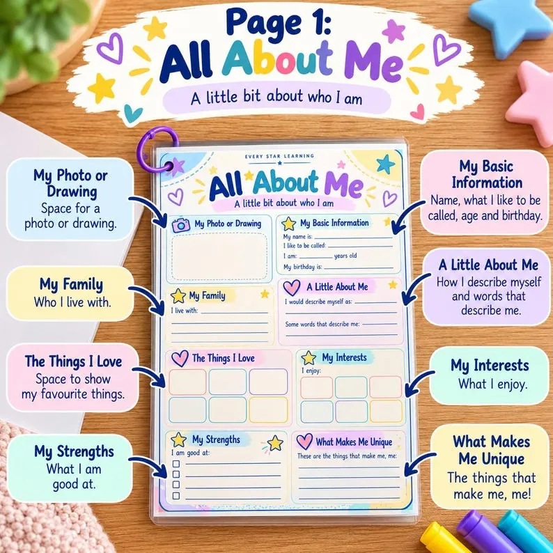
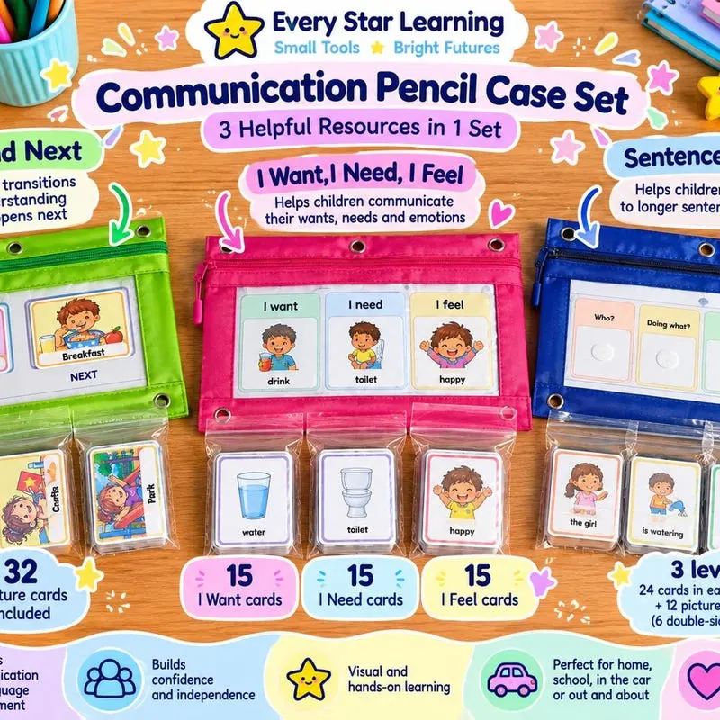
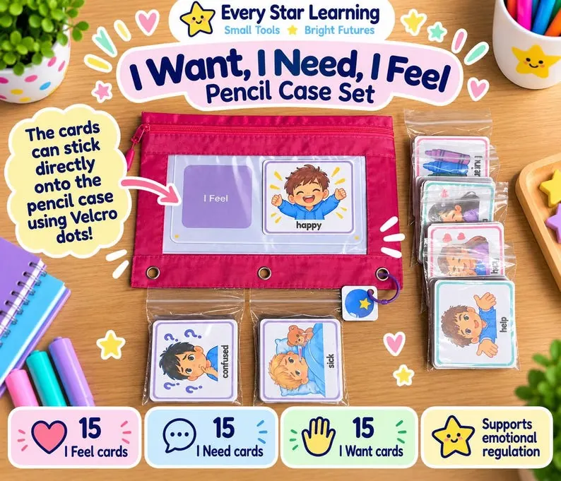
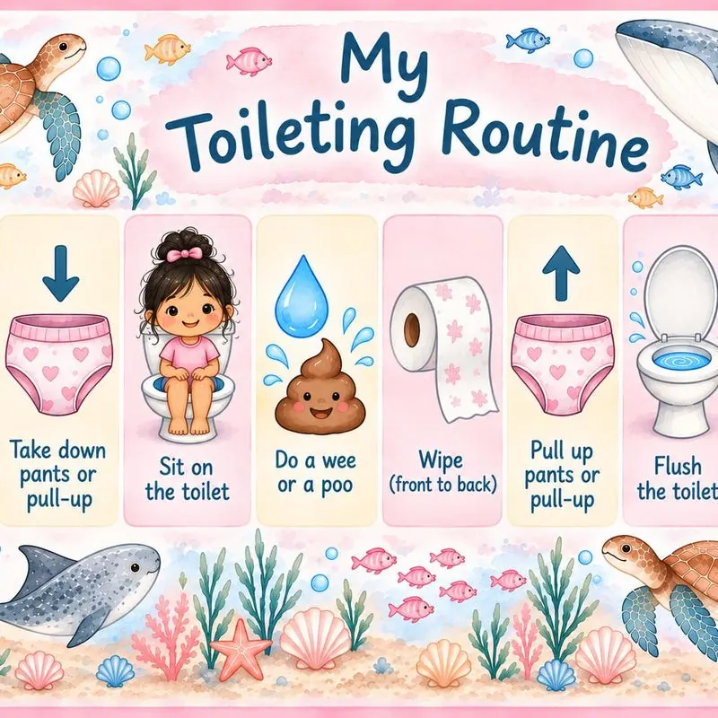

Physical resource
Colourful Semantics Inspired · 96 Word and Phrase Cards · Autism SEND Speech and Language Resource
Explore Sentence BuilderView on EtsyPRINT. PLAY. EXPLORE.
Explore Sentence Builder, Now & Next visual schedules, feelings and needs cards, personal support passports and printable toileting charts.
Choose a physical pencil-case resource or a downloadable visual chart. Each listing explains what is included; compare the options and choose what suits your child’s communication and everyday routines.
Physical resource
Colourful Semantics Inspired · 96 Word and Phrase Cards · Autism SEND Speech and Language Resource
Explore Sentence BuilderView on Etsy
Physical resource
32 Picture Cards · Autism ADHD SEND Transition Support · Portable Routine Aid
View on Etsy
Physical resource
Autism and SEN Resource · A5 Laminated All About Me Booklet · School & Nursery
View on Etsy
Physical resource
3 Visual Learning Pencil Case Sets · Now and Next, Feelings Cards & Sentence Builder
View on Etsy
Physical resource
45 Visual Cards · Autism ADHD SEND Support · Feelings & Needs Communication Aid
View on Etsy
Digital download
Ocean-themed A4 visual routine charts. Compare the listing previews to choose the steps that suit your child.
Prices checked 26 November 2026. See Etsy for current prices, contents and availability. Digital downloads are files to print; no physical item is posted.